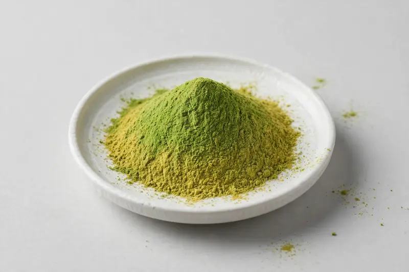

Matcha extract — green tea leaf extract for beverage and food formulations.

Overview
Matcha extract is produced from shade-grown Camellia sinensis leaves and valued for its vivid green color together with EGCG and caffeine content. Beverage and food brands use it as a concentrated green-tea flavor and color input for RTD drinks, latte mixes, bakery and confectionery. We are a Xi'an-based trading company sourcing through partner producers, with feasibility confirmed after receiving your target spec.
Specifications below reflect commonly requested options in the market — not a stock list. Share your target spec and we'll confirm exactly what we can supply, honestly.
| Specification | Details |
|---|---|
| Botanical identity | Matcha extract (Camellia sinensis leaf) |
| Marker compound | Commonly requested spec grades: EGCG and caffeine grades; actual specs confirmed on inquiry |
| Appearance | Bright green to yellowish-green fine powder |
| Analytical methods | Methods referenced in buyer specifications: HPLC |
| Mesh size | Typically 80–100 mesh (confirm per inquiry) |
| Testing | COA/TDS arranged on request; scope agreed per your spec |
Applications
Documentation
We don't claim in-house labs or certifications we don't hold. COA and TDS documents can be arranged on request, and testing scope is agreed against your specification before supply.
FAQ
Related products
Epigallocatechin Gallate
Key marker: EGCG 90-98% HPLC
View specs →Camellia sinensis
Key marker: EGCG / Polyphenols
View specs →Camellia sinensis
Key marker: Whole-leaf matcha
View specs →Sodium hyaluronate (fermentation-derived)
Key marker: Cosmetic & food grades
View specs →Hydrolyzed collagen (bovine/marine)
Key marker: Type I & III, bovine/marine
View specs →Huperzine A (Huperzia serrata)
Key marker: 1% / 98%+ grades
View specs →Moringa oleifera
Key marker: Behenic Acid
View specs →Pouteria lucuma
Key marker: Natural Sweetness & Fiber
View specs →Send your target spec and volumes — we'll respond with a tailored quotation.
Request a Quote